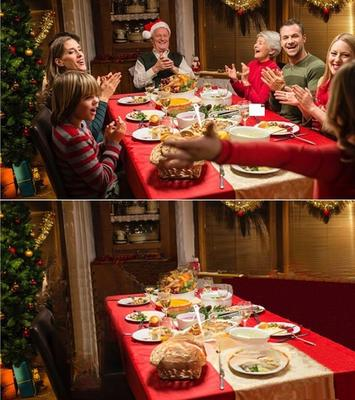

Cuando yo era todavía católico, debo admitir que la Navidad y las fiestas de Fin de Año tenían un brillo muy especial para mí. Y no hablo de creencias religiosas, sino del calor humano: mi casa con todos mis seres queridos, los villancicos que sonaban hasta en las casas vecinas, el árbol iluminado con lucecitas de colores, el olor a comida que anunciaba la cena tradicional, entre risas y carreras en la cocina, y ese momento casi mágico en que toda la familia —toda— se sentaba a la misma mesa (y lo mejor de todo: sin celulares). Aquello era mucho más que una festividad religiosa: en realidad no tenía nada que ver con la religión, era un refugio emocional, un recordatorio de que, al menos una vez al año, nada era más importante que disfrutar juntos.


Lamentablemente de pronto todo se vino abajo. Y no precisamente por la modernidad silenciosa del celular, con cada quien mirando su pantalla, como si la verdadera compañía estuviera siempre en otra parte. Mucho antes que eso llegó la fragmentación religiosa: de pronto, unos ya eran Testigos de Jehová y no celebran la Navidad; otros se volvieron adventistas, y consideran que todo eso era pagano; otros se hicieron luteranos, metodistas, presbiterianos, pentecostales o evangélicos, y celebraban la Nochebuena en su iglesia, con quienes ahora consideran sus verdaderos «hermanos»… Y la mesa que antes nos reunía es ahora sólo un mueble más, porque los que antes compartíamos tradiciones, ahora defendemos distintas doctrinas o cosmovisiones.
¡Y si supieran que yo, que ahora soy ateo, no necesito excusas teológicas ni prohibiciones doctrinales! Para mí la Navidad podría ser simplemente una buena oportunidad para celebrar la vida y la compañía. Pero ese momento ya no existe. Y quizás muchos no comprendan que lo que yo añoro no es la fe —esa la solté sin ningún remordimiento— sino aquellos días irrepetibles en que mi familia estaba unida, sin sectas divisorias, sin dogmas en competencia, sin prohibiciones cruzadas. Días que —lo sé con tristeza— ya no volverán, porque ahora cada uno pertenece a un dios distinto… o a ninguno.
A lo largo de mi vida he pasado décadas observando cómo las religiones presumen de ser «fuerzas de unión», mientras dejan a su paso un rastro interminable de rupturas familiares, conflictos sociales y hasta «guerras santas». Paradójicamente, aquello que supuestamente desciende de un «dios único y perfecto», ha generado uno de los mosaicos más caóticos, contradictorios y fragmentados en toda la historia humana: unas 4.200 religiones activas en el mundo actual y, según estimaciones antropológicas, al menos 18.000 dioses que han sido adorados a lo largo de nuestra historia documentada.
Así que, si la intención del «Creador» era transmitir una verdad única, lo hizo con la claridad de un manual mal dictado o mal copiado —o más bien, mal improvisado.
En Occidente el cristiano promedio suele repetir que su religión «une». Pero la verdad es que ni siquiera logra unir su propio hogar. Aunque su libro sagrado ya lo advertía —ese que pocos leen con cuidado, y menos aún interpretan sin filtros clericales—: Jesús mismo, el supuesto «príncipe de la paz», anuncia en Mateo 10:34-36, que vino a sembrar división, no unidad. Y en Mateo 10:37, exige ser amado por encima de la propia familia. Pero en Lucas 14:26 sube aún más la apuesta: quien no «aborrezca» a sus padres, hermanos, hijos y hasta su propia vida, no puede ser su discípulo.
¿De verdad algún creyente mentalmente sano ha seguido esto al pie de la letra? ¿O sólo lo recitan con la misma inconsciencia con que se repite una frase religiosa? Sin embargo, estas advertencias no son metáforas aisladas: son la declaración programática de un sistema que reconfigura la lealtad del individuo, alejándolo de su familia para adherirlo a una institución que lo vigila, lo culpa y lo necesita —sobre todo para sostenerse financieramente.
Y si el cristianismo, supuestamente monolítico, ya está hecho pedazos (unas 45.000 a 47.300 sectas, o «denominaciones», como ellos prefieren llamarse), ¿qué podemos decir del resto del mundo religioso? La humanidad está repartida en un arcoíris teológico capaz de marear al observador menos impresionable:
Politeístas, que veneran panteones completos.
Monoteístas, convencidos de que un solo dios les entregó a ellos la verdad absoluta.
Henoteístas, que aceptan muchos dioses, pero que adoran prioritariamente a uno.
Deístas, que creen en un creador ausente.
Panteístas, que convierten al universo en su «Dios».
No teístas, que prescinden de dioses, pero siguen rituales espirituales.
Y aparte de esto está el hinduismo, donde la creatividad religiosa alcanza niveles industriales: más de 300 millones de deidades catalogadas por algunos estudios —una cantidad que sólo se aproxima a la población de Indonesia, con 284 millones de habitantes, y de Estados Unidos con 342 millones.
El resultado antropológico es evidente: no existe un concepto universal de «Dios». Cada cultura inventó el suyo a conveniencia, según su geografía, sus necesidades y sus miedos. Y cada religión insiste en que la definición correcta es la suya.
Pero el mayor problema es que la división no opera sólo entre distintas religiones; también opera dentro de los hogares. Ya no se habla de «la familia», sino de «la familia en Cristo», una categoría que mágicamente excluye a quienes no piensen igual. Y de ahí nacen escenas que hoy son tristemente comunes: reuniones familiares que desaparecen, cumpleaños abandonados, fiestas tradicionales vacías, porque todos tienen «un compromiso con la iglesia».
Y las instituciones religiosas saben perfectamente lo que hacen: si controlan el tiempo del creyente, controlan su mente. Por eso abundan los retiros, talleres, reuniones de oración, cursos de doctrina, vigilias, células, estudios bíblicos, grupos de jóvenes, grupos de mujeres, grupos de hombres, grupos de matrimonios, grupos de intercesión, ministerios, más ministerios y… claro, compromisos con la iglesia.
Y mientras tanto, los «infieles» de la familia —a veces en la misma casa— se convierten en sospechosos espirituales, en ovejas negras destinadas al tormento eterno. Y pensar que lo irónico es que Jesús predijo la división familiar como un efecto natural de su mensaje, y los creyentes, sin darse cuenta, la provocan obedientemente.
Lo que sucede es que el problema antropológicamente central, no es sólo la diversidad religiosa, sino el chauvinismo espiritual que cada grupo desarrolla:
«Nosotros tenemos la verdad».
«Los demás están en error».
«Los otros son infieles».
«Los otros van al infierno».
Y este pensamiento compartimentalizado ha sido el combustible que ha alimentado guerras, genocidios, persecuciones, inquisiciones, terrorismo, fundamentalismos, y fracturas sociales que persisten hasta hoy. Porque si hay algo que une a las religiones, curiosamente, es su capacidad para identificar enemigos imaginarios, y etiquetar a quienes no pertenecen a su clan espiritual como «peligrosos», «impuros», «pecadores» o moralmente inferiores.
Y así, esas religiones que declaran venir a unir a la humanidad bajo un solo «Dios», han creado el fenómeno opuesto: una humanidad fracturada en miles de universos simbólicos incompatibles entre sí, y cada uno defendiendo su pedazo de cielo como si fuera una parcela espiritual legalmente registrada ante el notario divino.
Pero mientras tanto, seguimos viviendo en un planeta donde:
Millones de familias están divididas por creencias.
Miles de sectas compiten por fieles.
Decenas de religiones se consideran depositarias de la verdad.
Y los seres humanos, en vez de unirse por su humanidad común, siguen separados por sus dioses imaginarios.
¡Qué lástima! Pero sobre todo, qué oportunidad desperdiciada para construir una humanidad basada en la razón, la empatía y el pensamiento crítico, en vez de en libros sagrados contradictorios y dioses que ni siquiera se ponen de acuerdo entre ellos.
[Godless Freeman]
Comentarios
Comments powered by Disqus